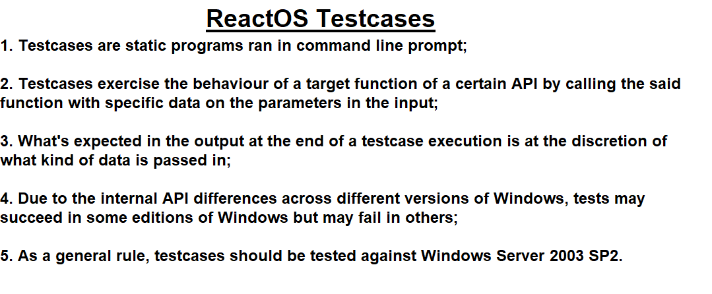
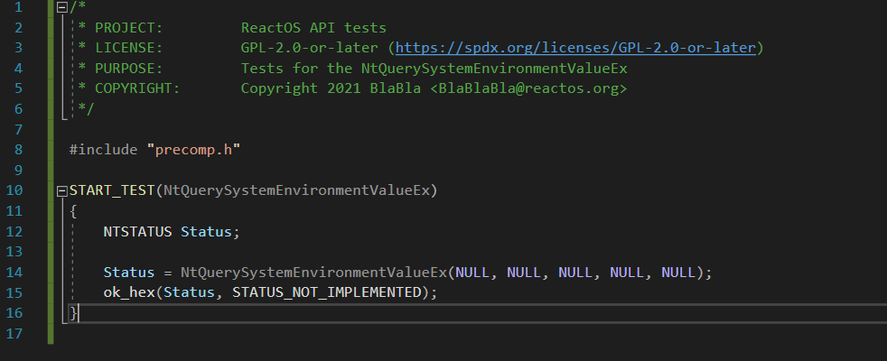
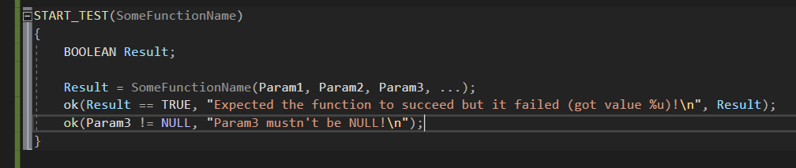
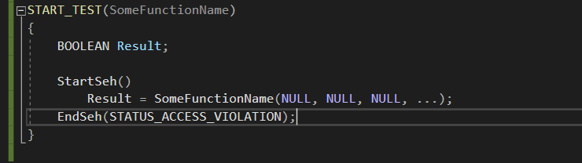

ReactOS Tutorials
Writing your first APITEST testcase
Table of Contents
-
Introduction
-
What is a testcase?
-
Types of API testcases
-
Write an API testcase
-
Compiling your testcase and examine the results
-
Types of macro tests
-
Using Structured Exception Handling on tests
-
Conclusion
Introduction
In this tutorial I'll show you how to write a testcase for specific function APIs, understanding the typology of API tests, compiling the testcase as well as
analysing the results of the executed tests. This article only covers the APITESTs section of the ReactOS Tests infrastructure, the rest like kernel tests (KMTEST),
driver or DIB tests aren't taken into account!
What is a testcase?
As ReactOS aims to be a compatible operating system with the NT architecture both in internal implementation as well as in API specifications, conducting research
is one of the fundamental aspects within the ReactOS development. As a matter of fact, during the course of ReactOS development every contributor that implements
a certain feature, fixing bugs or improving the existing code implementation has to do some research in some form, whether it's reverse engineering by using
advanced tools such as IDA (Freeware of Pro) or WinDBG to study certain implementations or writing testcases.
Albeit WinDBG is not a reverse engineering software in the literal sense of the term but a multipurpose debugging tool, it certainly and undoubtedly has reverse engineering
capabilities such as dissasembling a function of a target process using command lines such as u and uf given the right PDBs. Another technique within
the scope of research is writing testcases but you may ask, what is a testcase?
A testcase is a small software, typically a static program ran in a command shell prompt. The purpose of a testcase is to analyse the behaviour of a black box (a black box
being in our case a function from an API) by giving to the parameters of the black box with some data in the input and expecting some result in the output. The name "black box" is given
as such since because we don't have the original source code of the function the only way to understand, at least in part, the internal mechanism of the function is to perform
tests to the target function call to see how it interacts with the environment.
The results of a test depend at the discretion of what kind of data is passed to the function, in which circumstances, conditions and so forth. What must be known is that
tests can't be fully consistent (or at all) across different versions of Windows due to internal API differences, that is, the internal APIs that aren't documented to the public.
Therefore as a general requirement the testcases should be executed on Windows Server 2003 SP2. Here's a screenshot of summarised points about testcases.

Types of API testcases
Testcases can come in 3 distinct types, each of them having subsets of different tests: user mode, kernel mode and driver tests. User mode tests
are testcases which exercise the behaviour of routines from APIs that are used in user mode, notably the NTDLL tests, subsystem environment library tests like KERNEL32 tests
and so on. Kernel mode tests however usually concern with the internal kernel APIs of the NT kernel, which compromises the Executive and the kernel itself. And finally,
the driver tests, as the name implies, these tests ensure the correct operation and behaviour of the target components of the system by using drivers. Generally such
tests reside in kernel mode although they don't have anything in common with the actual kernel tests that test the behaviour against the kernel itself.
In this tutorial I'll take into account the user mode tests, specifically, the APITESTs. An APITEST is a testcase with the scope of exercising the operation of a
function from a specific API. Such tests can be found at modules/rostests/apitests directory
source tree path.
Write an API testcase
🢂 Create the testcase file
In this example I'll write a very simple testcase of a function of the Native API, NTDLL, therefore the target directory to create our file is rostests/apitests/ntdll.
The function that we're going to write a testcase for is NtQuerySystemEnvironmentValueEx. KEEP IN MIND that the file MUST have the same name as the function.
🢂 Write the testcase code
Now it's time to write the source code of the testcase. It should look like as in the screenshot below.

Confused? Don't worry, I'll explain piece by piece what is the code supposed to do. First of all we should include the precompiled header that comes within the NTDLL
testcases directory itself in order to use whatever stuff we need for our testcase. Next here's START_TEST, the main entry point of the testcase of the target
function to be tested. It's mandatory that the name of the function must be explicitly defined in the argument of the said entry point as you can see in the screenshot.
START_TEST is equivalent to a main C entry point more or less.
Finally here's the function in question that we're going to probe the status output with a macro test, ok_hex. What does ok_hex basically do is
to conditionally check if the two hexadecimal (since a NTSTATUS is represented as a hex value) values match with each other. The syntax of the macro test is as follows:
ok_hex(Value, ExpectedValue);
In this case we're testing that the returned status value, pointed by the Status variable, should be equal to the expected that is STATUS_NOT_IMPLEMENTED.
In other words, we're performing a test that exercises the situation that this function is INDEED not implemented. If the condition is not met then it's been proven that such
situation can't occur, thus, the function is implemented and the test is deemed as failure.
🢂 Include the testcase
The testcase inclusion is done by following the two steps. First, the file must be appended to the source in CMakeLists.txt file so that CMake can be aware of the
new testcase file in question. The inclusion must respect the lexicographic order so you'll end up as in this screenshot below.

Afterwards, the test entry point of the function must be included in the list in the testlist.c file. Opening that file you'll see a bunch of function entry point
prototypes and entry point test definition in a structure called winetest_testlist. As usual the lexicographic order must be respected. With that being said, you should
end up as follows.


Compiling your testcase and examine the results
🢂 Compile the testcase
Now that we've finished writing the testcase and include it, the next step is to compile the testcase code and run it to the target machine we want to perform tests in.
The syntax for building the testcase is as follows.
ninja rostests
The testcase compilation can be either done in RosBE (thus using the GCC compiler) or in VS Developer command prompt (MSVC). This command line instructs the builder
to compile the whole ReactOS Tests infrastructure, including the kernel tests and the ReactOS Automatic Testing Utility (rosautotest). The compilation of testcases
can be done only if -DENABLE_ROSTESTS=1 flag is set prior to the preparation of the building files with configure.cmd.
🢂 Analyse the results
As I've explained above, testcases are static programs that are executed within a command prompt. As such, a testcase has to be launched based on the following syntax.
name_of_executable_test.exe test_case_name
With test_case_name being the name of the specific function that we want to perform tests on in order to trigger the tests for it. Since we've wrote
a small NTDLL testcase against NtQuerySystemEnvironmentValueEx function the command line in this case should be ntdll_apitest.exe NtQuerySystemEnvironmentValueEx.
As explained above, it is recommended that the tests should be performed in Windows Server 2003 SP2. The testcase executable can be either launched from the directory path itself
or extracting the testcase to the desired location you want.

As you can see, the successful executed test means that indeed the function is not implemented in Server 2003 SP2 and thus that is the condition we should expect as per the testcase.
Otherwise if it would may happen that a certain test fails then it means the expected condition is not met and it doesn't conform to the function's behaviour of the system, in other words,
the testcase has to be corrected in order to match with the observed behaviour. As an example let's simulate a test failure by expecting a status code value of STATUS_SUCCESS rather than
STATUS_NOT_IMPLEMENTED.

A test failure should look like this. Here we are expecting a value of STATUS_SUCCESS (0x00000000) but instead STATUS_NOT_IMPLEMENTED (0xC0000002) is returned by the call.
To conduct a proper research on the behaviour of the function and how it interacts with the input data all the tests must pass accordingly in a Windows system.
Types of macro tests
Macro tests can be of 3 types: test probing macros, print macros and test altering macros. Test altering macros are macro tests that modify the returned result at the end of a test, and example
of such macro being ros_skip_flaky. The maco tests are defined and can be found on test.h C header file within the SDK of ReactOS.
Here I'll describe their purpose and usage of a few of them.
🢂 Probing the output parameters (generic way)
The standard way of probing the data retrieved in the output is by using the generic ok() macro. As in the example of the testcase here in this tutorial we've used
ok_hex(), ok() is a macro that probes conditions if they're met or not. The syntax of it is as follows.
ok(ConditionToMeet, "Some string to print", ...);
In additon of probing the expected condition, it can also print to the console prompt some information or stuff. The ... at the end represents the optional argument,
where the caller can use it as a string format to print the data of certain variables probed within the condition check. Here's an example of how is this macro used.

🢂 Skipping a test
As a testcase code can grow more and more, advanced operations that can't be completed successfully may lead to more issues and erratic behaviour within testcase code. When such
cases occur the following test has to be skipped and halt the whole execution. The macro that does that is skip(). The syntax of it is as follows.
skip("Some string to print");
With skip() you've the opportunity to inform the user that the specific operation has failed to suceed before bailing out the testcase. As such of a failed operation
can be seen like in this screenshot.

🢂 Skipping a flaky test
A test is considered flaky if the test sporadically fails within no apparent reasons or in odd ways. When that happens it usually means the test may have triggered a particular behaviour
of the tested environment that can't be expected during specific conditions or scenarios. Even then, the testcase code is at the blame for not being completely accurate of what kind
of test should be done and in which conditions but in some cases such tests may warrant the ros_skip_flaky macro.

The macro requires no parameters to be filled in, it's used as is. The test before the defined macro is the one that won't be taken into account, that is, if the test
in the screenshot fails it won't be taken as an actual failed test.
🢂 Printing additional information
Nearly almost of the macro tests print some sort of data to the command prompt during the execution of the testcase but some macros can be used solely to print additional
stuff without performing any kind of tests. The macro that's used for it is trace() and the syntax for it is as similar as to printf().

Using Structured Exception Handling on tests
Dealing with dangling pointers or erratic parameters of a function may cause the testcase (as as well as the command prompt) to exit prematurely without
further premonition. This symptom is a cause of a thrown exception by the exception handler which has caught a certain condition in which the application
can't continue with its normal operation because of the faulty usage of the function. When that happens, the test code must be wrapped within the Structured Exception
Handling (or SEH as acronym) block and the ReactOS Tests infrastructure provides SEH macros for that.

StartSeh() is the prologue of the SEH block whereas EndSeh() is the epilogue of the said structured block. EndSeh() expects
an exception status code, mainly a NTSTATUS, which is checked against the returned code value by the exception handler. If both the values match then the test is deemed
as successful otherwise the returned exception code is returned to the command prompt with further notice the test has failed. In this example I expect that the exception handler
should return STATUS_ACCESS_VIOLATION as I pass NULL pointers all over the function's arguments. SEH is not warranted for functions that don't throw exceptions to the caller.
Conclusion
This is pretty much the basic aspects of what a testcase is and how a small testcase should be written. What you've learned so far are the general tenets about ReactOS
testcases, the tools and constructs used in a testcase and how are the test results analysed. Congratulations!
{kind=link}
{kind=link}
{kind=link}
{kind=link}